Week 7 — Lecture notes
System response and stability
Other formats:
📄 PDFLecture outline
- Recap: frequency response & transfer functions.
- First & second order systems in the time domain.
- Exponential stability
- Marginal stability
- Bounded input, bounded output stability.
Question of the lecture: how can we use the frequency response of a system to understand qualitatively what happens when we give an input to a system?
Recap: frequency response and transfer functions
Recap: in week 6, we introduced a very important characterisation of a system: the transfer function.
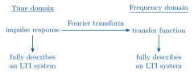
For a linear, constant coefficient differential equation
a_n y^{(n)}(t) + a_{n-1}y^{(n-1)}(t) + \dots + a_0 y(t) = b_m u^{(m)}(t) + \dots + b_0 u(t)
the transfer function is the rational function
\frac{b_m (j\omega)^m + \dots + b_0} {a_n (j\omega)^n + a_{n-1}(j\omega)^{n-1} + \dots + a_0}.
The roots of the denominator polynomial a_n s^n + a_{n-1}s^{n-1} + \dots + a_0, (or more generally the points s \in \mathbb{C} where G(s) = \infty), are called the poles of the system. They tell us a lot about the system behaviour, as we started to see last week.
First and second order systems in the time domain
Last lecture, we looked at the frequency response of 1st and 2nd order systems.
This lecture, we’ll start by looking at how these systems behave in the time domain.
We already know what the impulse response of a first order system looks like (from quiz 1):
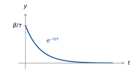
\tau\dot{y} = -y + \beta u. \qquad(1)
\begin{aligned} \text{Impulse:}\quad \tau y(0) &= \beta \\[4pt] y(0) &= \beta/\tau \end{aligned}
h(t) = \alpha e^{-t/\tau} \quad (t > 0).
h(0) = \alpha = \frac{\beta}{\tau}.
So h(t) = \dfrac{\beta}{\tau}e^{-t/\tau}H(t).
What about the step response?
Convolve the impulse response with the step.
\begin{aligned} y(t) &= H(t) * h(t) \\[6pt] &= \int_{-\infty}^{\infty} \underbrace{H(t-\mu)}_{\textcolor{#C0392B}{0 \text{ for } \mu > t}}\, \frac{\beta}{\tau}e^{-\frac{\mu}{\tau}}\, \underbrace{H(\mu)}_{\textcolor{#C0392B}{0 \text{ for } \mu < 0}}\,\mathrm{d}\mu \\[6pt] &= \int_0^t \frac{\beta}{\tau}e^{-\frac{\mu}{\tau}}\,\mathrm{d}\mu \\[6pt] &= \left[-\beta e^{-\frac{\mu}{\tau}}\right]_0^t \;=\; \beta - \beta e^{-\frac{t}{\tau}}. \end{aligned}
Does this answer make sense? Set \dot{y} = 0 in (1): 0 = -y + \beta u, u = 1.
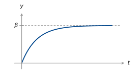
What is the significance of the time constant \tau?
It tells us how quickly the system rises.
At t = \tau,
\begin{aligned} y(t) &= \beta - \beta e^{-1} \\[4pt] &= \beta\left(1 - e^{-1}\right) \\[4pt] &\approx 0.63\beta. \end{aligned}
\tau is the time taken for a 1st order system to reach 63% of its final value.
Two other common metrics are rise time & settling time.
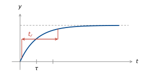
rise time: time to go from 10% to 90% of final value, \approx 2.2\tau.
settling time: time until output reaches and stays within a specified band, e.g. 5% of final value.
These performance metrics also apply to second order (and higher order) step responses (where there isn’t a clear time constant).
How do second order step responses look?
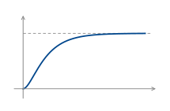
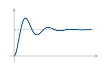
How do these relate to pole locations?
\frac{1}{p + j\omega} \;\rightsquigarrow\; e^{-pt} = e^{-\operatorname{Re}(p)t}\left(\cos(\operatorname{Im}(p)t) - j\sin(\operatorname{Im}(p)t)\right)
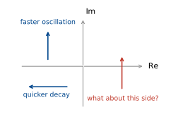
Exponential stability
Recall pole locations from week 1.
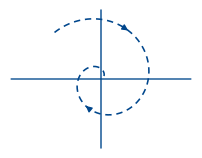
\dot{x} = px
p in left half plane
(\operatorname{Re}(p) < 0)
“stable”
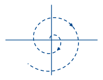
\dot{x} = px
p in right half plane
(\operatorname{Re}(p) > 0).
“unstable”
“Stable” here means exponential decay from initial conditions.
Formally:
A differential equation
a_n y^{(n)}(t) + a_{n-1}y^{(n-1)}(t) + \dots + a_0 y(t) = b_m u^{(m)}(t) + \dots + b_0 u(t)
is said to be exponentially stable if there exist \alpha > 0, M > 0 such that, for any initial conditions and u(t) = 0,
|y(t)| \le Me^{-\alpha t}\left(|y(0)| + |y'(0)| + \dots + |y^{(n-1)}(0)|\right) \quad\text{for all } t > 0.
How do we check for stability?
We’ve already seen that poles in the left half plane give decaying exponentials in the time domain. It turns out this is enough, although we won’t see exactly why until we have the Laplace transform.
An LTI system defined by a differential equation is exponentially stable if and only if all its poles are in the left half plane.
Example: a damped pendulum with torque input
mL^2\ddot{\theta} + b\dot{\theta} + mgL\sin\theta = \tau
Near \theta = 0,
\sin\theta \approx \theta, so
mL^2\ddot{\theta} + b\dot{\theta} + mgL\,\theta = \tau.
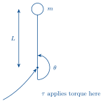
Looks like an RLC circuit?
Find the transfer function:
mL^2(j\omega)^2\Theta + b\,j\omega\,\Theta + mgL\,\Theta = 1.
F.T. of impulse is 1.
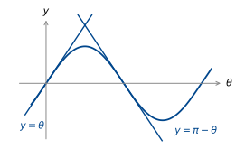
So
G(j\omega) = \frac{1}{mL^2(j\omega)^2 + b(j\omega) + mgL}.
Poles are at \dfrac{-b \pm \sqrt{b^2 - 4m^2L^3g}}{2mL^2}.
Two cases: If b^2 - 4m^2L^3g < 0, (underdamped), real part is \dfrac{-b}{2mL^2}. Stable!
If b^2 - 4m^2L^3g \ge 0, (critically/overdamped),
Where is the real part?
b^2 - 4m^2L^3g \le b^2, \quad\text{so}\quad -b \pm \sqrt{b^2 - 4m^2L^3g} \le 0. \quad\text{Stable!}
What about at \theta = \pi?
\sin\theta \approx \pi - \theta, so we have
mL^2\ddot{\theta} + b\dot{\theta} + mgL(\pi - \theta) = \tau.
Let \theta - \pi = \phi. Then we have
mL^2\ddot{\phi} + b\dot{\phi} - mgL\phi = \tau.
Transfer function is
G(j\omega) = \frac{1}{mL^2(j\omega)^2 + b(j\omega) - mgL}.
So poles are now at \dfrac{1}{2mL^2}\left(-b \pm \underbrace{\sqrt{b^2 + 4m^2L^3g}}_{>\,b}\right). Unstable!
Marginal stability
What about a (downwards pointing) pendulum with no damping?
mL^2\ddot{\theta} + \underset{\textcolor{#C0392B}{0}}{\cancel{b\dot{\theta}}} + mgL\,\theta = \tau.
\left(mL^2(j\omega)^2 + mgL\right)\Theta = T
G(j\omega) = \frac{1}{mL^2(j\omega)^2 + mgL} = \frac{\dfrac{1}{mL^2}}{(j\omega)^2 + \dfrac{g}{L}}
Poles at j\omega = \pm j\sqrt{\dfrac{g}{L}}.
Let’s inverse Fourier transform to see what the impulse response looks like.
From the transform table (quiz 2 formula sheet):
\frac{\omega_0}{(a + j\omega)^2 + \omega_0^2} \;\xrightarrow{\;\text{i.f.t.}\;}\; e^{-at}\sin(\omega_0 t)H(t)
We have a = 0, \omega_0 = \sqrt{\dfrac{g}{L}}, and an extra factor of \dfrac{1}{mL^2\omega_0}. So in the time domain, we have
h(t) = \frac{\sin(\omega_0 t)}{mL^2\omega_0}H(t), \qquad \omega_0 = \sqrt{\frac{g}{L}}.
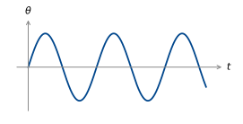
Should we consider this to be stable? Unstable?
↳ it is in the middle: marginally stable.
A differential equation
a_n y^{(n)}(t) + a_{n-1}y^{(n-1)}(t) + \dots + a_0 y(t) = b_m u^{(m)}(t) + \dots + b_0 u(t)
is said to be marginally stable if
it is not exponentially stable and
there exists M > 0 such that, for u(t) = 0 and any initial conditions,
|y(t)| \le Me^{-\alpha t}\left(|y(0)| + |y'(0)| + \dots + |y^{(n-1)}(0)|\right) \quad\text{for all } t > 0.
Example
\left. \begin{aligned} q &= Cv \\ \dot{q} &= i \end{aligned} \right\} \quad i = \frac{\mathrm{d}}{\mathrm{d}t}Cv.
If i(t) = 0, \dfrac{\mathrm{d}}{\mathrm{d}t}v(t) = 0: \;\boxed{v(t) = v(0)}.
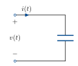
i(t) input, v(t) output.
Is this system exponentially stable? Marginally stable?
We can check marginal stability again by looking at the poles of the system:
An LTI system is marginally stable if and only if:
all poles p have \operatorname{Re}(p) \le 0;
at least one pole has \operatorname{Re}(p) = 0;
there are no repeated poles with \operatorname{Re}(p) = 0.
BIBO stability
Our definitions of stability so far are internal: they ignore input and output. But a system is a map from an input signal to an output signal. It doesn’t need to come from a differential equation.
Can we define stability in terms of the inputs and outputs of a system?
One way to do this is “Bounded Input, Bounded Output” stability.
A system is bounded input, bounded output (BIBO) stable if there exists \gamma > 0 such that
\max_t |y(t)| \le \gamma \max_t |u(t)|
whenever \max_t |u(t)| < \infty.
Example: insulin delivery
Insulin blood delivery can be modelled using a “single compartment model”.
Let u(t) be intravenous insulin infusion rate in mU/min and y(t) be the plasma insulin concentration in mU/L.
Let V be plasma volume in L, and C be the rate at which plasma is cleared of insulin by the body’s metabolism, in L/min.
Plasma insulin concentration can be modelled as
V\dot{y}(t) = u(t) - Cy(t).
The transfer function is
G(j\omega) = \frac{1}{Vj\omega + C}.
Note: this is equivalent to an RC circuit. i(t) is the insulin injection, v(t) the concentration. The plasma is a capacitor with capacitance V, and clearance C is the conductance \frac{1}{R} of the resistor.
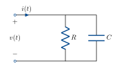
The pole is at \dfrac{-C}{V}, so the system is exponentially stable: if we stop insulin injection, it will gradually decay to zero.
What about BIBO stability?
The impulse response is the inverse Fourier transform of G(j\omega): h(t) = \dfrac{1}{V}e^{-\frac{C}{V}t}H(t) (This tells us what a shot of insulin at t = 0 does). For any insulin input u(t),
y(t) = h(t) * u(t).
We want to show a bound on |y(t)| given one on |u(t)|.
\begin{aligned} |y(t)| &= \left|\int_{-\infty}^{\infty} h(t - \tau)u(\tau)\,\mathrm{d}\tau\right| \\[6pt] &\le \int_{-\infty}^{\infty} \left|h(t - \tau)u(\tau)\right|\,\mathrm{d}\tau \\[6pt] &= \int_{-\infty}^{\infty} |h(t - \tau)||u(\tau)|\,\mathrm{d}\tau \\[6pt] &\le \max_t|u(t)| \int_{-\infty}^{\infty} |h(t)|\,\mathrm{d}t. \end{aligned}
In our case,
\begin{aligned} \int_{-\infty}^{\infty}|h(t)|\,\mathrm{d}t &= \int_0^{\infty} \frac{1}{V}e^{-\frac{C}{V}t}\,\mathrm{d}t \\[6pt] &= \left[\frac{-1}{C}e^{-\frac{C}{V}t}\right]_0^{\infty} = \frac{1}{C}. \end{aligned}
So \max_t |y(t)| < \dfrac{1}{C}\max_t|u(t)|.
It turns out, the condition \int|h(t)|\,\mathrm{d}t < \infty completely characterises BIBO stability.
An LTI system is BIBO stable \iff \displaystyle\int_{-\infty}^{\infty}|h(t)|\,\mathrm{d}t < \infty.
(Same condition that guarantees existence of the Fourier transform).
Are BIBO stability and exponential stability equivalent? Yes, under mild conditions.
For the differential equation
a_n y^{(n)}(t) + a_{n-1}y^{(n-1)}(t) + \dots + a_0 y(t) = b_m u^{(m)}(t) + \dots + b_0 u(t),
exponential stability and BIBO stability are equivalent if m \le n and the polynomials
a_n s^n + a_{n-1}s^{n-1} + \dots + a_0 \quad\text{and}\quad b_m s^m + b_{m-1}s^{m-1} + \dots + b_0
share no common roots.
In practice, they are usually equivalent.
We also should give a definition for instability.
A system is unstable if it is not stable, in any of the senses we have defined so far.
Example: population dynamics
Let u(t) be net migration rate, k_r be reproduction rate per capita, k_d be death rate per capita and y(t) be population.
As a differential equation:
\dot{y}(t) = u(t) - k_d y(t) + k_r y(t).
Transfer function:
G(j\omega) = \frac{1}{j\omega + (k_d - k_r)}
The pole is at k_r - k_d.
k_r = k_d: marginally stable
k_r > k_d: unstable
k_d > k_r: stable.
Unstable poles and the Fourier transform
Now let’s look a bit closer at unstable poles. We have glossed over something important.
For a stable 1st order sys., h(t) = e^{-at}H(t), we have the Fourier transform
\begin{aligned} \int_0^{\infty} e^{-at}e^{-j\omega t}\,\mathrm{d}t &= \left[\frac{-1}{a + j\omega}e^{-t(a + j\omega)}\right]_0^{\infty} \\[6pt] &= \lim_{T \to \infty} \frac{-1}{a + j\omega}e^{-Ta}e^{-Tj\omega} + \frac{1}{a + j\omega}e^0 \end{aligned}
\lim_{T \to \infty} e^{-Ta} = 0, so we only have the second term.
But for an unstable system, h(t) = e^{at}H(t).
\lim_{T \to \infty} e^{Ta} = \infty. The Fourier transform doesn’t converge, so how can we ever have unstable poles in our transfer function, or look at the frequency response of an unstable system?
We need a more sophisticated transform that still converges: the Laplace Transform.